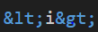

CSS
| CSS Features | Explanation |
|---|---|
| CSS Styling | CSS styling is where you put css under the "Style" tag which is under the "Head" tag.
This allows you to apply styles to your html code to make it look pretty
|
| Selectors | In CSS there are selectors. Selectors such as Class and Id
These allow you to apply separate styles to code without affecting the whole thing. Id
has the highest priority as a selector therefore its style can overwrite any other style using a different selector.

|
| Separate CSS style | You can implement CSS styling such as water css which applies a style to your program which makes it more appealing when loaded into a browser. |
| Inline CSS | Inline CSS is when css is Outside the style tag. DO NOT DO THIS! Dan will be unhappy. |
| Animations | CSS code can be used to apply animations to text so it can change colours |
HTML
| HTML Features | Explanation |
|---|---|
| Tags | Tags are the building blocks of HTML they have to be opened and closed
using < >. Anything from the start of the tag to the end of the end tag is an element
 |
| Links | Links In HTML can be used to redirect who clicks it to somewhere else. This can be done by
providing a URL as well as the correct code.

|
| Attributes & Values | Attributes is code that goes inside the tag which can be used in a few ways. For an example,
it can be used to declare a class attribute. And Values are anything that goes inside speech marks.

|
| Helpfull code | <strong> Bold
<i> Itallics <p> Paragraph <br> Line break  The greater than and less than symbol can only be shown by writing that out. This code when displayed will show <i> |
Command Line
| Command Line Features | Explanation |
|---|---|
| Make a Directory | md foldername |
| Remove a Directory | rd foldername |
| Make a File | echo (anything put here goes into the file)> filename |
| del filename | |
| Opening a file | notepad filename (notepad)
code filename (vs) |
| Listing Folders and Files | dir (directory) |
| Copying files to folder | copy filename foldername |
| Navigate directory | cd foldername (nav to specific folder)
cd.. (go back a directory) |
Batch Files
| Batch Features | Explanation |
|---|---|
| @echo | @Echo off stops code being displayed as text to the user |
| Operators | EQU (equal to)
NEQ (not equal to) LSS (less than) LEQ (less than or equal to) GTR (greater than) GEQ (greater than or equal to) |
| Asking user for input | This can be done by declaring a variable a name and inputting valid text.

|
| Calling a users input | This can be done by typing out the variable name surrounded by %

|
Git
| Git Features | Explanation |
|---|---|
| Git push | Git push pushes all changes from your local machine to the git repository |
| Git pull | Git pull pulls all changes made from the git repository to your local machine |
| Git add . | Git add . (Adds files to repository) |
| Git commit -m "" | Git commit -m "any message" records any changes in the repository |
| Git init -b main | This creates a repository in the folder this command is ran in through the CLI |
GO
| GO Features | Explanation |
|---|---|
| If/Else statements | IF/Else statements are conditional. IF means it will
execute a piece of code if a certain condition is met e.g true.
and Else would be executed if that condition is not met.

|
| Declaring a Variable | Declaring a variable in go requires you to
declare that something is going to be a variable VAR
Declare a Name for the variable INPUT
Then finally declare the type the variable is going to be STRING. Input here
will have the value of an empty string has there is no specific value assigned.

|
| Short assignment operator | Declaring and assigning a variable can also be done in a shorter way
by using ":=" When using this all that is needed is a name and a value
and this operator will auto assign to the type of the value
e.g "a:=1" would make "a" an integer.

|
| Functions | Functions store specific code which execute a certain task. Functions can be used to
call code saving the time of writing it again. Functions include parameters which can have
values assigned to them. Functions can also include return types
which tells what data type the value returned should be.
Function is declared by FUNC then followed by Nameoffunction(parameters string) return type

|
| For Loops | A for loop is code that repeats itself [loops] until
a certain condition is met such as true. For an example, a for loop
can be a series of If/else statements and like them it has a true and false
a for loop will make the If/else statement keep repeating until the condition met is true.
A foor loop can also made without using If/else for an example when a loop is used to count up to a certain number.


|
| Running go | Running go can be done in two ways. "Go run ." can be entered to
run Go code thats location is currently open in the CLI. Go run filename.go can also be used to
run go as well.

|
| Go mod init | Go mod init is used to create a go.mod file which creates a new module for GO which keeps track of all your files needed for your project. |
| Why doe we automate testing? | Testing code is great because it helps to make sure your code works without any errors It also helps to prevent errors of happening in the future if regular testing is carried out. Automating testing of code Is also quicker as each piece of code doesn't have to be tested individually it is also more effective as it helps to spot errors quicker and some you may not notice. |
Java Script
| Java Script | Explanation |
|---|---|
| Java Script Scripting | JS Scripting is where you put JS under the "Script" tag which should be at the "End" of the HTML page. This is
because JS is a programming language and should load last once everything else has loaded in so everything works well.
This allows you to add JS to your HTML which allows for more functionality and interactivity of web pages instead of them being static.
Java Scriptcode should be included in a separate JS file similarly to CSS.
|
| JS Variables | var - var should be used when the variable or type can change and if you must support old browsers
let - let should be used when the variable or type can change const - Always use const when the type or value shouldnt be changed |
| Displaying to the console | console.log- writes to the console
return- stops the execution of a function and returns a value |
| JS operators | |
| IF/Else statements | Similar to the GO page this is how IF/ELSE statements works
|
| For/While Loop | Similar to GO page this is how FOR/WHILE loops work
WHILE: |
| Functions | Similar to the GO page functions can store specific code. In HTML a function can be called from an external
JS file by calling the function and its parameters in the SCRIPT tag. Bleow is a JS function and an example of it in HTML
HTML: |
| Array | An Array is a collection or a list of data stored. Used to store multiple pieces of data of the same type together. To create an array var myArray=[];
|
| Object | An object is like a car, a car has properties like weight, color and methods like start and stop. An object can contain
many values like a car has many properties.
|
Head First JS
| Head First JS | Notes |
|---|---|
| Chapter One |
-Java script adds behaviour to web pages
- Browsers begin executing JS code as soon as they encounter so put js code at the bottom of the page -Add javascript in script tag - Can put JS in separate File - Integer, String and Boolean number,letter,true or false -IF/ELSE allow for you to make decisions in your code -WHILE/FOR statements allow you to execute code many times by looping |
| Chapter Two |
- Use Pseudocode to sketch out program before you begin coding
-Two kinds of boolean operators Comparison and Logical -Comparison operators compare two values and results in true or false for an example less than or greater than -Logical operators combine two boolean Values - Math.random will generate a random number between 0 and 1 but not including 1 (case sensitive) -Math.floor function rounds down a decimal number to the nearest integer (case sensitive) -The Prompt function shows a dialog with message and space for the user to enter a value |
| Chapter 3 |
- To declare a function use the function key word
-Use parentheses to enclose any parameters, and curly braces to enclose the body of a function -You can call a function by using its name and passing arguments to the functions parameters (if any) -A function can optionally return a value using the return statement -A function creates a local scope for parameters and any local variables the function uses - Variables are either global or local meaning they are either visible everywhere or visible only in the function -Declare local variables at the top of the body of your function -If you forget to declare a local variable using var, that variable will be global which could cause errors -Functions help organize code and create reuseable chunks of code -can customize code in a function by passing arguments to parameters use different arguments to get different results -Can use built in js functions like alert,prompt and Math.random to do work in your programmes -organize code so functions are together and global variables |
| Chapter 4 |
-Arrays are a data structure for ordered data
- Arrays use a zero based index so the first item is at position 0 - All arrays have a length property which holds a number representing the number of items in the array -You can access any item using its index. For an example, use myArray[1] to access item one which will be the second item because its a zero based index -If an item does not exist trying to access it will result in a value of undefined -Assigning a value to an existing item will change its value -Assigning a value to an item that does not exist on the array will create a new item in the array -you can use a value of any type for an array item -Not all the values in array need to be the same type -creating an array var myArray=[]; -For loop is commonly used to itterate through Arrays -The While loop is most often used when you don't know how many times you need to loop and your looping until a condition is met. whereas a For loop is used when you know the number of times you need to loop. -you can increment a variable by one with the post-increment operator ++ and this can be done to decrement -- -You can add a new value to an array using Push |
| Chapter 5 |
-An object is a collection of properties, Like a car has different properties about it such as colour,make,size
-To access a property; use dot notation: the name of the variable containing the object, then a period, then the name of the property -You can add new properties to an object at any time, by assigning a value to a new property Name - You can also delete properties from objects using the delete operator -Unlike variables that contain primitive values, like strings, numbers and booleans a variable cant actually contain an object instead, it contains a reference to an object, we say that objects are "refernce variables" -When you pass an object to a function the function gets a copy of the reference to the object, not a copy of the object itself so if you change the value of one of the objects properties it changes the value in the original object. -Object properties can contain functions. When a function is in an object we call it a Method -You can call a method by using the Dot notation: the object name, a period and the property name of the method followed by parentheses -A method is just like a function except that it is in an object -You can pass arguments to methods just like regular functions -When you call an objects method, the keyword this refers to the object whose method you are calling. -To access an objects properties in an objects method, you must use dot notation with this in place of the objects name. -in object-oriented programming, we think in terms of objects rather than procedures |
| Chapter 6 |
- The Document Object Model or DOM is the browsers internal representation of your web pages
-The browser creates the DOM for your page as it loads and parses the HTML -You get access to the DOM in your JavaScript code with the Document object -The document object has properties and methods you can use to access and modify the DOM -The document.getElementById method grabs an element from the DOM using its ID - The document.getElementById method returns an element object that represents an element in your pages - An element object has properties and methods you can use to read an elements content and change it -The innerHTML property holds the text content, as well as all nested HTML content of an element -You can modify the content of an element by changing the value of its innerHTML property -When you modify an element by changing its innerHTML property, you see the change in your web page immediately -You can get the value of an elements attributes using the getAttribute method -You can set the value of an elements attributes using the setAttribute method -If you put your code in a script element in the head of the page you need to make sure you don't try to modify the DOM until the page has fully loaded -You can use the window objects onload property to set an event handler or call-back, function for the load event -The event handler for the windows onload property will be called as soon as the page is fully loaded -There are many different kinds of events we can handle in JavaScript with event handler functions |
| Chapter 7 |
-there are two groups of types in javascript: Primitives and Objects. Any value that isn't a primitive type is an -The primitives are: numbers,strings,booleans, null and undefined. Everything else is an object -Undefined means that a variable (or property or array item) hasn't yet been initialized to a value -null means "no object" -NaN stands for "Not a Number", although a better way to think of NaN is as a number that can't be represented in JavaScript.The type of Nan is number. -Nan never equals any other value, including itself, so to test for NaN use the function isNaN -Test two values for equality using ==or=== -If two operands have different types, the equality operator (==) will try to convert one of the operands into another type before testing for equality. -If two operands have different types, the strict equality operator (===) returns false. -You can use === if you want to be sure no type conversion happens, however sometimes the type conversion of == can come in handy -Type conversion is also used with other operators, like arithmetic operators and string concatenation -JavaScript has five falsey values: undefined, num,0,"" (the empty string) and NaN. (False is also falsey). All other values are truthy -Strings sometimes behave like objects. If you use a property or method on a primitive string, JavaScript will convert the string to an object temporarily, use the property and then convert it back to a primitive string. This happens behind the scenes so you don't have to think about it. -The string has many methods that are useful for string manipulation -Two objects are equal only if the variables containing the object references point to the same object. |
| Chapter 8, Battleship |
-We use HTML to build the structure of the Battleship game, CSS to style it and JavaScript to create the behavior
- The id of each element in the table is used to update the image of the element to indicate a HIT or MISS - The form uses an input with type button we attach an event handler to the button so we can know in the code when a player has entered a guess -To get a value from a form input text element use the elements value property - CSS positioning can be used to position elements precisely in a web page - We organized the code using three objects: a model, a view and a controller -Each object in the game has one primary responsibility -The responsibility of the model is to store the state of the game and implement logic that modifies that state -The responsibility of the controller is to glue the game together, to make sure the players guess is sent to the model to update the state in the model changes. -The responsibility of the controller is to glue the game together, to make sure the players guess is sent to the model to update the state, and to check to see when the game is complete -By designing the game with objects that each have a seperate responsibility, we can build and test each part of the game independently - To make it easier to create and test the model we intitially hardcoded tje locations of the ships after ensuring the model was working we replaced these hardcoded locations with random locations generated by code - We used properties in the model, like NumShips and shiplength so we dont hardcode values in the methods that we might want to change later - Arrays have an IndexOf method that is simillar to the string IndexOfMethod the array indexof method takes a value and returns the index of that value if it exists in the array or 01 if it does not exist. - With chaining you can string together object references using the dot operator thus combining statements and eliminating temporary variables -The do while loop is similar to the while loop except that the condition is checked after the statements in the body of the loop have executed once. -Quality assurance is an important part of developing your cod. QA requires testing not just valid input but invalid input as well |
| Chapter 9 |
-Most JavaScript code is written to react to events
-There are many different kinds of events your code can react to -To react to an event you write an event handler function and register it. For instance to register a handler for the click event you assign the handler function to the onclick property of an element -You're not required to handle any specific event. You choose to handle the events you're interested in. -Functions are used for handlers because functions allow us to package up code to be executed later -Code written to handle events is different from code that executes top to bottom and then completes. Event handlers can run at any time and in any order: they are asynchronous - Events that occur on elements in the DOM cause an event object to be passed to the event handler -The event object contains properties with extra information about the event, including the type like click or load and the target (the object on which the event occurred) -Many events can happen very close together. When too many events happen for the browser to handle them as they occur, the events are stored in an event queue (in the order in which they occurred) so the browser can execute the event handlers for each event in turn. -If an event handler is computationally complex it will slow down the handling of the events in the queue because only one event handler can execute at a time -The functions setTimeout and setInterval are used to generate time-based events after a certain time has passed -The method getElementsByTagName returns zero, one or more element objects in a NodeList (which is array-like so you can iterate over it) |